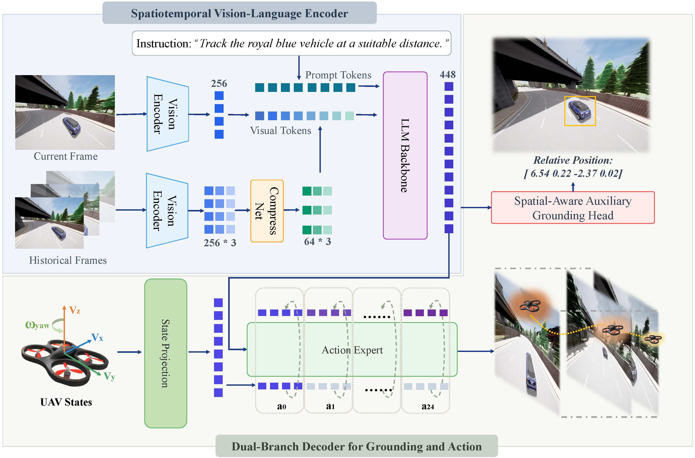
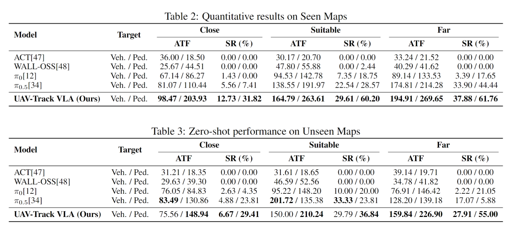
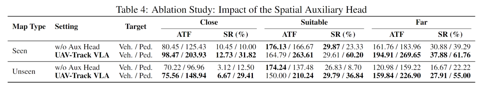
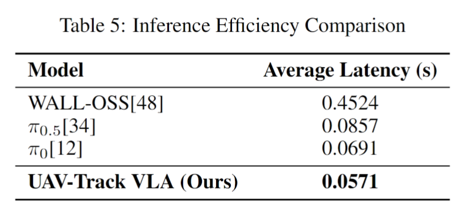
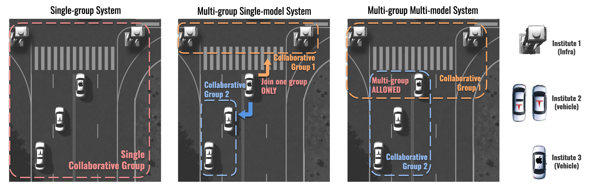

Embodied visual tracking is crucial for Unmanned Aerial Vehicles (UAVs) executing complex real-world tasks. In dynamic urban scenarios with complex semantic requirements, Vision-Language-Action (VLA) models show great promise due to their cross-modal fusion and continuous action generation capabilities. To benchmark multimodal tracking in such environments, we construct a dedicated evaluation benchmark and a large-scale dataset encompassing over 890K frames, 176 tasks, and 85 diverse objects. Furthermore, to address temporal feature redundancy and the lack of spatial geometric priors in existing VLA models, we propose an improved VLA tracking model, UAV-Track VLA. Built upon the architecture, our model introduces a temporal compression net to efficiently capture inter-frame dynamics. Additionally, a parallel dual-branch decoder comprising a spatial-aware auxiliary grounding head and a flow matching action expert is designed to decouple cross-modal features and generate fine-grained continuous actions. Systematic experiments in the CARLA simulator validate the superior end-to-end performance of our method. Notably, in challenging long-distance pedestrian tracking tasks, UAV-Track VLA achieves a 61.76% success rate and 269.65 average tracking frames, significantly outperforming existing baselines. Furthermore, it demonstrates robust zero-shot generalization in unseen environments and reduces single-step inference latency by 33.4% (to 0.0571s) compared to the original, enabling highly efficient, real-time UAV control.
Abstract
Method Overview

UAV-Track VLA processes heterogeneous inputs through a spatiotemporal encoder and parallel decoders. Within the encoder, historical frames are temporally compressed and concatenated with the current frame to capture dynamic evolution, then fused with the instruction via an LLM. The shared multimodal features are subsequently dispatched to two decoupled branches: a spatial-aware auxiliary grounding head that predicts the target’s relative pose to inject precise geometric priors for robust high-frequency control.
Benchmark Results

A comprehensive overview of the multidimensional diversity of our benchmark dataset. Top: Visualization of environment diversity. Bottom: Quantitative distribution of target categories, kinematic parameters, and tracking distances.
Tracking Performance & Generalization Analysis

We compare UAV-Track VLA against several baselines including $\pi_0$, the original $\pi_{0.5}$, and traditional control-based methods, with average results summarized in Tables 2 and 3. Overall, UAV-Track VLA outperforms all baseline models, with particularly significant improvements in pedestrian tracking tasks. Even when tested on entirely unseen CARLA towns, UAV-Track VLA maintains stable performance without obvious performance drop, verifying its strong generalization ability.
Ablation Study

We investigate the contribution of the spatial auxiliary head by comparing the full UAV-Track VLA against a variant without this module (denoted as w/o Aux Head in Table 4). The absence of the auxiliary head leads to a severe performance decay in pedestrian tracking tasks. In seen maps ("Far"), the average steps drop from 269.65 to 183.96, and the SR falls from 61.76% to 37.88%. This performance gap is even more pronounced in unseen maps, dropping from 226.90 steps to 159.22 steps. These results demonstrate that the auxiliary head is essential for achieving precise vision-language alignment and spatial distance estimation, which is critical for maintaining accurate distances during pedestrian tracking.
Inference Efficiency

To evaluate the real-time control capabilities, we conduct a timing analysis of the single-step continuous inference latency across different models. To ensure a fair and meaningful evaluation, our comparison focuses strictly on models with similar parameter scales. Consequently, the ACT model is excluded from this analysis due to its significantly smaller parameter size and distinct architecture. Based on a statistical analysis of approximately 1,200 valid data points per model, the average inference latency is summarized in Table 5. The results reveal that while the original $\pi_{0.5}$ requires 0.0857s per step, our UAV-Track VLA reduces the average latency to 0.0571s, achieving a substantial 33.4% improvement in computational efficiency. This efficiency gain is primarily attributed to the temporal compression net, which effectively eliminates the redundancy of multi-frame inputs while preserving essential temporal context for high-precision tracking.
Our Vision

Our proposed STAMP framework effectively addresses these limitations, offering a scalable solution for multi-group collaborative perception. The key innovation lies in its lightweight adapter and reverter pair (approximately 1MB) required for each collaboration group an agent joins. This efficient design enables agents to equip multiple adapter-reverter pairs, facilitating seamless participation in various groups without significant computational overhead. The minimal memory footprint ensures scalability, even as agents join numerous collaboration groups, making STAMP particularly well-suited for multi-group and multi-model collaboration systems.
We can distinguish between three collaborative system types:
- Single-group systems, where agents either operate independently or are compelled to collaborate with all others, are susceptible to performance bottlenecks caused by inferior agents and vulnerabilities introduced by malicious attackers.
- Multi-group single-model systems, allowing multiple collaboration groups but restricting agents to a single group because each agent can only equip a single model.
- Multi-group multi-model systems enabling agents to join multiple groups if they meet the predefined standards.
The multi-group structure offers significant advantages over traditional single-group systems. It enhances agents' potential for diverse collaborations, consequently improving overall performance. This approach mitigates the bottleneck effect by allowing high-performing agents to maintain efficiency within groups of similar capability while potentially assisting less capable agents in other groups. Furthermore, it enhances system flexibility, enabling dynamic group formation based on specific task requirements or environmental conditions.
However, implementing such a multi-group system poses challenges for existing heterogeneous collaborative pipelines. End-to-end training approaches require simultaneous training of all models, conflicting with the concept of distinct collaboration groups. Methods that require separate encoders for each group become impractical as the number of groups increases due to computational and memory constraints.
Our proposed STAMP framework effectively addresses these limitations offering a scalable solution for multi-group collaborative perception. The key innovation lies in its lightweight adapter and reverter pair (approximately 1MB) required for each collaboration group an agent joins. This efficient design enables agents to equip multiple adapter-reverter pairs, facilitating seamless participation in various groups without significant computational overhead. The minimal memory footprint ensures scalability, even as agents join numerous collaboration groups, making STAMP particularly well-suited for multi-group and multi-model collaboration systems.